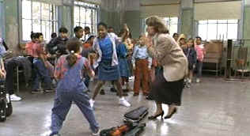

| Music of the
Heart (SE)/B,B+ |
| Disney/1999/124/ANA 1.85 |
Music of the Heart, the story of the fifty
violins, is a sincere if unimaginative film. It is certainly heartfelt, whatever else you might
think. Yes, there seems to be a scheduled crisis every twelve minutes to the second, but the raw
material is worthwhile and it's always a pleasure to watch Meryl Streep exercise her acting
chops.
Based on a true, ongoing story, Music of the Heart is about Roberta
Guaspari, a violin teacher who carved out a life for herself in an East Harlem school with unusual
determination. Her inspiring violin classes become so popular the school system must choose
students through a lottery. The music and accomplishment of the children stands on its own, but in
the larger picture, it provides an alternate pathway to the dangers of the ghetto. Treading on thin
treacle, director Wes Craven is sensitive to characters and tale, but fails to mount dramatic
tension beyond predictable.
 |
| It's not the varsity rag. ©DIsney. |
Roberta Guaspari is not the kind of character who
wallows in self pity. Whatever doubts she has are quickly resolved and she moves on, just as Music
of the Heart moves quickly through the evolution of the East Harlem Music program. The highlight of
the film has got to be the launching and performance of Fiddlefest at Carnegie Hall. In
order to save the program from financial disaster, Roberta is lucky enough to generate support from
the musical community and a benefit performance is arranged, but not without some detours and
complications.
A solid troop of supporting actors take second fiddle to the central
performance of Streep. Angela Basset is a strong presence as principal Janet
Williams, though she
seems so polished at times it's scary. Aidan Quinn and Jay O. Saunders take shots at playing
Guaspari's tune and Kieran Culkin and Charlie Hofheimer play her two sons right out of a
classic television sitcom. Cloris Leachman provides periodic doses of reality as Roberta's mother.
Disney delivers the goods in an excellent special
edition, including the documentary made about Guaspari and her program, Small Wonders
on a second disc. Audio commentary by Craven and deleted scenes with Craven comments complete a
fine package. There's a "making of" presentation and a scoring session with composer
Mason Daring.
The DVD is consistently sharp with fine details well rendered.
Color is fully saturated with no bleeding. The bright photography is captured with excellent
contrast range and plenty of luminosity. Flesh tones vary nicely, blacks are deep and lush and peak
transitions are free from blooming or distortion. How do the violins sound? Well, it depends on
who's playing them, but overall the sound is clean with nice sense of space and directionality.
|
|
|
|

Selections from the feature archive include articles on
Akira Kurosawa, Frank
Darabont, Blonde Bimbos, Hollywood Street Gangs, or Vietnam: The
Hollywood Pariah, and many more....

What actor would you vote whose screen persona best exemplified the fabric of the president of the
United States? Check act Acting Presidential for a look at the many actors
who have coveted The Oval Office.

Home of The American Film Institute.


News, information, features about current films in theaters and in the
pipeline. Easy to use interface.

The DVD Forum is an international association of hardware
manufacturers, software firms and other users of Digital Versatile Discs (the "DVD
Format"), created for the purpose of exchanging and disseminating ideas and information about
the DVD Format and its technical capabilities, improvements and innovations.

The
Movie Poster Archive include extensive poster images from the films of stars like Susan Hayward,
Kirk Douglas, Katharine Hepburn and many more. Our featured star is Robert Mitchum
|